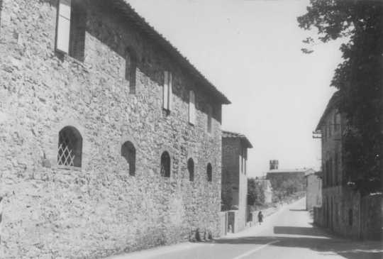
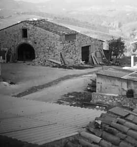
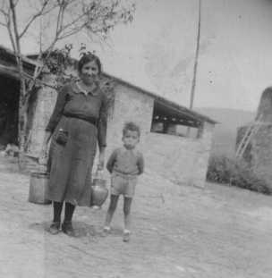

Quercegrossa (Ricordi e memorie)
CAPITOLO I - LUOGHI E PODERI
(QUERCEGROSSA - CASAGRANDE)
Cliccami per ritornare all'Indice luoghi e poderi
Vai all'Indice dei Capitoli
Quercegrossa - Vai a
Quercegrossa - Introduzione storica
Quercegrossa - Vai a
Villa
Quercegrossa - Vai a
Palazzaccio
Quercegrossa - Vai a
Quercegrossa di Sotto Case Ticci
Casagrande
Quercegrossa - Vai a
Quercegrossa di Sopra
Quercegrossa - Vai a
Nuove costruzioni
Quercegrossa paese - Casagrande

Questa casa colonica di due piani, davanti alla villa Andreucci in territorio di Castelnuovo, è denominata nel Cinquecento “Quercegrossa Amidei” e successivamente “Querciagrossa Andreucci”; l’attributo Casagrande appare per la prima volta nel 1807 su uno stato delle anime della parrocchia di Basciano alla quale il podere apparteneva. Intorno alla metà dell’Ottocento entrò in uso, per qualche decennio, il nome di “Giardino” per indicare Casagrande, che però non riuscì a imporsi e rimase Casagrande fino a metà Novecento, quando cadde in disuso. Abitazione di un colono fin dai primi tempi comprendeva tutti gli annessi agricoli e capanna distaccata. Dal testamento dell’Andreucci del 1766 apprendiamo che il piano terra comprende un tinaio abbastanza vasto da contenere cinque tini, la stanza del forno, una stalla con cinque bovi aranti e un vitello, la stalla con due pecore, uno stalletto con due maialetti per allevare, e stalla con due somare. Nel catasto del 1825 il podere è detto “Quercia di Sopra”, nome col quale verrà indicata successivamente tutta la parte del paese in mano Andreucci per distinguerla da quello dei Ticci detta “Quercia di Sotto”. Il fabbricato, indicato come casa colonica, si presenta di 1056 bq. pari a mq. 359. Sulla parte Est, capanna e aia coprono una superficie di 1296 bq.


Vent’anni dopo gli Andreucci compiono importanti lavori nel podere; lavori che gli daranno quell’aspetto che noi abbiamo visto e ricordiamo ancora con i due archi che davano aria alla loggetta sulla parte sud. I lavori intrapresi ridussero notevolmente le dimensioni del podere perché l’edificio venne accorciato nella parte Sud lungo la strada principale tanto da coprire un’area di 265 mq., inferiore di ben 94 mq. sulla precedente misura. In questa zona venne lasciato uno spazio di una decina di metri e quindi costruito un fabbricato comprendente una stanza per uso agricolo o carbonaia, un forno, rimasto attivo fino al 1960 circa, e alcune parate per carri e magazzini. La piazzetta tra forno e Casagrande diventava strada; entrava nei campi a fianco della capanna e scendeva alle fonti. Con la proprietà Mori e il raddoppio del podere furono modificati gli interni e costruiti i castri che davano sulla piazza di Quercegrossa, con un’antica pietra miliare inglobata nel muro, la stalla delle pecore e la parata. Dietro di questi, quasi a ridosso dell’aia, altri castri per gli altri contadini con edificio basso e allungato. Gli ingressi alla casa divennero due, uno per famiglia colonica e quello del Losi, che guardava a est, introduceva alla cucina al pian terreno. Esternamente, accanto all’ingresso, si trovavano la cantina e il gabinetto all’angolo della casa. L’entrata del Morrocchi, invece, guardava a sud e immetteva subito in cucina con scala interna che portava alla loggia e alle camere. Accanto, la stalla e la stanza del segato. Questo sarà l’assetto finale di Casagrande fino al 1962, quando il nuovo proprietario Calagna demolì i castri, trasformò la capanna in abitazione, sopraelevò il fabbricato di Casagrande di un piano per ricavarvi alcuni appartamenti, tamponando le logge e trasformando l’edificio in un casermone senz’anima. Anna Masti fu la prima inquilina nel 1964. Gli spazi esterni, aia compresa, furono completamente edificati.
Ragazzi in piazza a Quercia: Donatella Barucci, Emanuela Bandini e Stefano Socci. Dietro si vede il tettino del castro dei maiali del Losi con la finestrina della stalla delle pecore. A sinistra, appena visibile, si appoggiava la costruzione di Giotto Fontana.
Nelle foto precedenti Maria Losi e il nipote Fabio nel piazzale davanti Casagrande con alle spalle i castri del 2° podere e a destra il pagliaio sull’aia. A fianco, la capanna del Losi poco prima di essere trasformata. Sopra la veduta della facciata sulla piazza con la porta della stalla del Losi (oggi porta del Bar) e la famosa pietra ove era solito sedersi Damino, nella foto occupata da una signora.
Veduta parziale della piazza, di Casagrande e della parata del Losi.
Veduta di Casagrande dopo la ristrutturazione
|